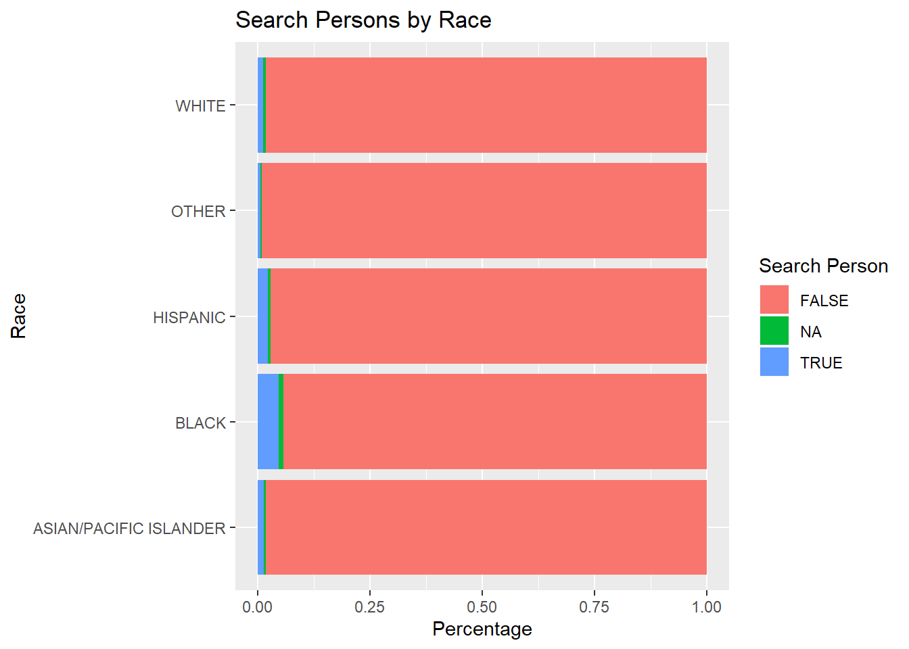
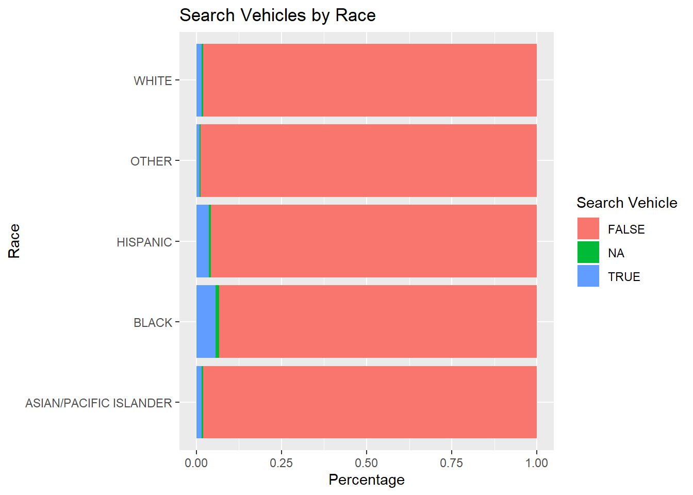

Chapter 6 Sunrise and Sunset in San Antonio, TX
During night times when the sun is set, researchers speculate that stops are made by police officers without the acknowledgment of the racial identity of the driver. This should be the exact opposite for police officers during the day times. With the hope of identifying possible underlying racial discrimination with the available stop data, it has therefore been determined that for a specific region, the differences between the percentage of minority drivers within day times and night times could be used to detect such discrimination. The central idea is that, by observing the distribution of the difference values through the progression of time, we can gain a better understanding of the change of police behaviors with the transformation from day times to night times.
The calculation of the difference for this research project is set to be the daytime percentage of minority drivers (black) being stopped deducted by that of the night time percentage. A positive difference value indicates that if the police officer is able to identify the identity of the driver (i.e., under the day times), she or he has a higher percentage chance of stopping the minority driver. Whereas during the night times with a lack of sufficient light source, we assumed that the police officer was unable to identify the driver’s race. Therefore, if there exists racial discrimination against minority drivers, we should expect to observe that a significant proportion of percentage differences should be positive. However, if the visualization shows an opposite distribution, then we have to conclude that the division of day time and night time has failed to capture the existence of racial discrimination.
SAN <- SAN %>%
dplyr::mutate(date2 = lubridate::as_date(lubridate::ymd(as.character(date))))
SAN <- SAN %>% mutate(date_time = as.POSIXct(paste(date, time), tz = "America/Chicago", format = "%Y-%m-%d %H:%M:%OS"))
oursunriseset <- function(latitude, longitude, date, direction = c("sunrise", "sunset")) {
date.lat.long <- data.frame(date = date, lat = latitude, lon = longitude)
if(direction == "sunrise"){
x <- getSunlightTimes(data = date.lat.long, keep=direction, tz="America/Chicago")$sunrise }else{
x <- getSunlightTimes(data = date.lat.long, keep=direction, tz="America/Chicago")$sunset }
return(x)
}
sunrise <- oursunriseset(29.4241, -98.4936, SAN$date2, direction = "sunrise")
sunset <- oursunriseset(29.4241, -98.4936, SAN$date2, direction = "sunset")
SAN <- cbind(SAN, sunrise, sunset)
SAN <- SAN %>%
mutate(light = ifelse(date_time < sunrise, "night", ifelse(date_time > sunset, "night", "day")))
racial_perc <- function(mon, yr, race){
x1 <- filter(SAN, light == "day", month == mon, year == yr)
x1 <- prop.table(table(x1$subject_race))
x1 <- as.data.frame(x1)
x1 <- filter(x1, Var1 == race)$Freq
x2 <- filter(SAN,light == "night", month == mon, year == yr)
x2 <- prop.table(table(x2$subject_race))
x2 <- as.data.frame(x2)
x2 <- filter(x2, Var1 == race)$Freq
return(x1-x2)
}
x <- c()
y <- c()
z <- c()
for (i in seq(2012,2017)){
for (j in seq(1,12)){
diff <- racial_perc(j,i,"black")
x <- c(x, diff)
y <- c(y,i)
z <- c(z,j)
}
}
diff_data_SAN <- as.data.frame(cbind(x,y,z))
diff_data_SAN <- diff_data_SAN %>% mutate(time = 1:nrow(diff_data_SAN))
x <- c()
y <- c()
z <- c()
for (i in seq(1,4)){
diff <- racial_perc(i,'2018',"black")
x <- c(x, diff)
z <- c(1,2,3,4)
y <- c(2018, 2018, 2018, 2018)
}
n <- nrow(diff_data_SAN)
diff_data_SAN2 <- as.data.frame(cbind(x,y,z))
diff_data_SAN2 <- diff_data_SAN2 %>% mutate(time = (n+1):(n+4))
diff_data_SAN <- rbind(diff_data_SAN,diff_data_SAN2)
ggplot(data = diff_data_SAN) +
geom_point(mapping = aes(x = time, y = x)) +
geom_hline(yintercept=0, linetype="dashed", color = "red")
The policing data used for the visualization is from Sanantonio, Texas, and the date is from January 2012 to April 2018. This data recorded a total number of 1,040,428 observations. Key variables are the date of the stop made and the race of the driver, and the corresponding sunrise and sunset time were calculated with each of the given dates. If the stop took place after the sunrise time and before the sunset time, it was set to be a stop made during the day time. Stops that took place outside of this range were set to be night time stops. Then for each day, the percentage of black drivers stopped during day and night was separately calculated and their difference was documented. Finally, the visualization of the key variables was a scatter plot with the horizontal axis as the progression of time and the vertical axis as the day time percentage deducted by night time percentage. For us to claim that the plot has successfully captured the possible existence of racial discrimination, we should expect to observe the majority of the points to be above the horizontal line at zero. However, the scatter plot demonstrates a trend contrary to our expectations. Most of the points fall under the horizontal line, which indicates that for the region of Sanantonio, black drivers on average were stopped at a lower percentage during day time than night time. Using this method and the given data, we have failed the attempt to prove that there has been racial discrimination against black drivers within the data.
One possible downfall of the aforementioned method is that it failed to acknowledge the possible difference in the distribution of driver populations between day time and night time. More specifically speaking, it is likely that for the region of Sanantonio, drivers who are on the road during night time and day time are two completely different population groups, and therefore, comparing the percentages of drivers stopped between these two possibly distinct population might be less meaningful. One possible improvement in the hope of alleviating population distinctions is the “veil of darkness” test, which limits to the stops made only one hour before and after the sunset time. This approach helps to reduce the possible distinction in the racial distribution of the night time and day time drivers. A similar set of procedures to the previous method was conducted, and a second scatter plot was produced. For the second time, the majority of the points are still below the horizontal line, which indicates that even if we have attempted to reduce the possible transformation of racial distribution, black drivers were mostly stopped at a higher percentage during night time relative to that of the day time. Therefore, the second plot has also failed to offer evidence for the existence of racial discrimination in the data for Sanantonio.
SAN2 <- SAN %>%
filter(sunset-3600 < date_time & sunset + 3600 > date_time)
racial_perc2 <- function(mon, yr, race){
x1 <- filter(SAN2, light == "day", month == mon, year == yr)
x1 <- prop.table(table(x1$subject_race))
x1 <- as.data.frame(x1)
x1 <- filter(x1, Var1 == race)$Freq
x2 <- filter(SAN2,light == "night", month == mon, year == yr)
x2 <- prop.table(table(x2$subject_race))
x2 <- as.data.frame(x2)
x2 <- filter(x2, Var1 == race)$Freq
return(x1-x2)
}
x <- c()
y <- c()
z <- c()
for (i in seq(2012,2017)){
for (j in seq(1,12)){
diff <- racial_perc(j,i,"black")
x <- c(x, diff)
y <- c(y,i)
z <- c(z,j)
}
}
diff_data_SAN <- as.data.frame(cbind(x,y,z))
diff_data_SAN <- diff_data_SAN %>% mutate(time = 1:nrow(diff_data_SAN))
x <- c()
y <- c()
z <- c()
for (i in seq(1,4)){
diff <- racial_perc2(i,'2018',"black")
x <- c(x, diff)
z <- c(1,2,3,4)
y <- c(2018, 2018, 2018, 2018)
}
n <- nrow(diff_data_SAN)
diff_data_SAN2 <- as.data.frame(cbind(x,y,z))
diff_data_SAN2 <- diff_data_SAN2 %>% mutate(time = (n+1):(n+4))
diff_data_SAN <- rbind(diff_data_SAN,diff_data_SAN2)
ggplot(data = diff_data_SAN) +
geom_point(mapping = aes(x = time, y = x)) +
geom_hline(yintercept=0, linetype="dashed", color = "red")